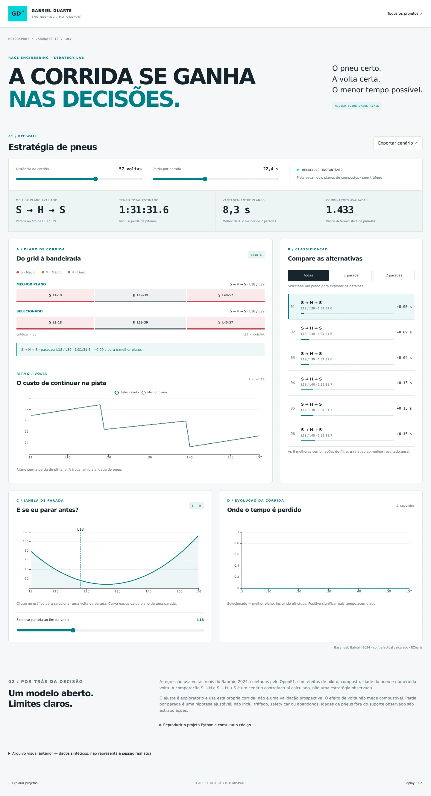

Fórmula 1 · Projeto #101
Estratégia de pneus e janela de pit-stop
Compare planos de parada com o ritmo estimado a partir de voltas observadas no GP do Bahrein 2024. Pista seca, dois compostos por plano, sem tráfego.
01 / Pit wall
Estratégia de pneus
A / plano de corrida
Do grid à bandeirada
Ritmo / volta
O custo de continuar na pista
Ritmo sem a perda de pit-lane. A troca reinicia a idade do pneu.
C / janela de parada
E se eu parar antes?
Clique no gráfico para selecionar uma volta de parada. Curva exclusiva do plano de uma parada.
D / evolução da corrida
Onde o tempo é perdido
Selecionado − melhor plano, incluindo pit-stops. Positivo significa mais tempo acumulado.
Inicializando gráficos…
02 / Por trás da decisão
Um modelo aberto.
Limites claros.
A regressão usa voltas reais do Bahrain 2024, coletadas pelo OpenF1, com efeitos de piloto, composto, idade do pneu e número da volta. A comparação S → H e S → H → S é um cenário contrafactual calculado, não uma estratégia observada.
O ajuste é exploratório e usa esta própria corrida: não é uma validação prospectiva. O efeito de volta não mede combustível. Perda por parada é uma hipótese ajustável; não inclui tráfego, safety car ou abandonos. Idades de pneus fora do suporte observado são extrapolações.
Reproduzir o projeto Python e consultar o código
python -m pip install -r requirements/real-f1.txt python scripts/collect_f1_real.py python scripts/fit_f1_strategy.pyCódigo e metodologia ↗
Captura da análise com dados históricos reais
